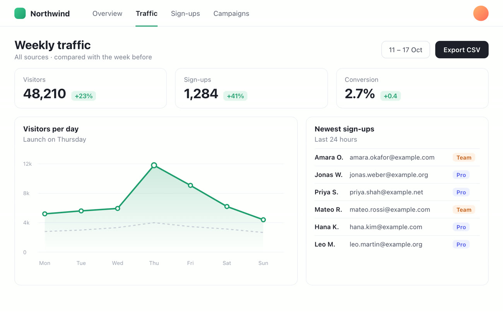
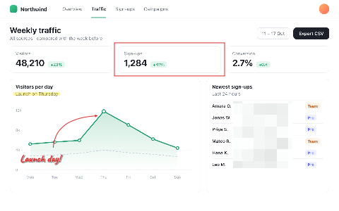
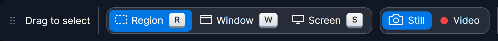
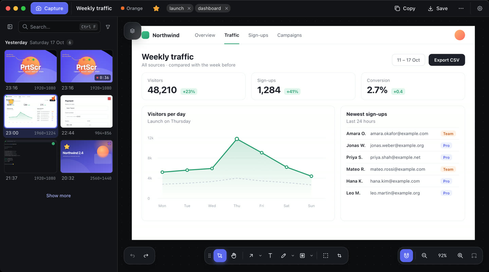
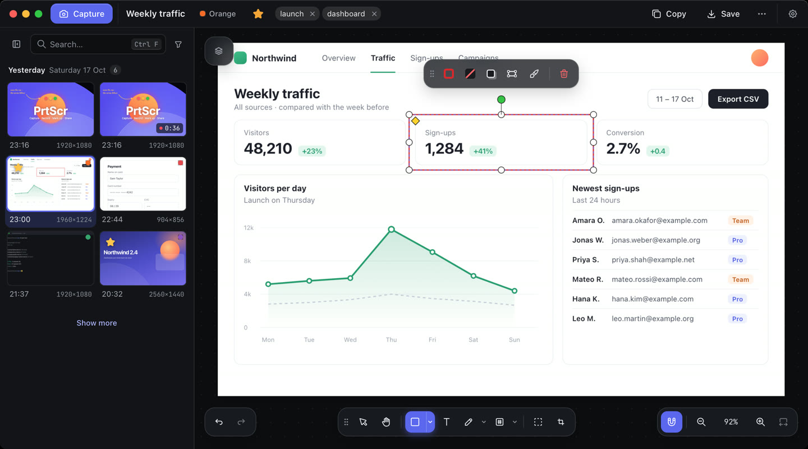
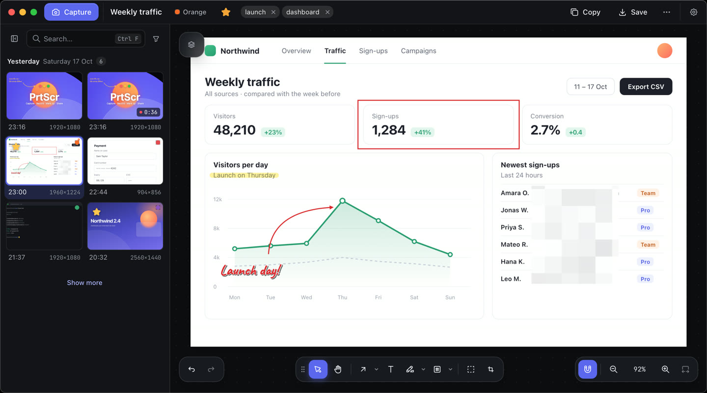
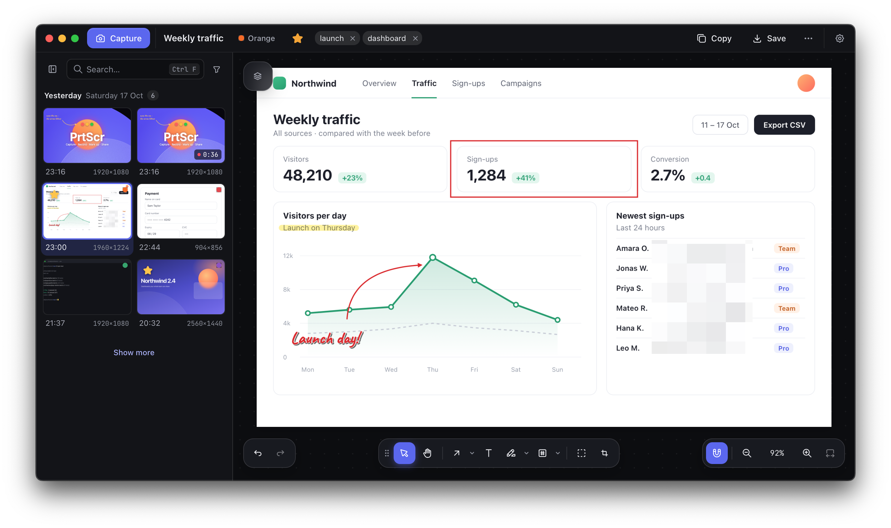

ReportsWeekly
Export from here
Arrows that stick
Point at something, then move it. The arrow stays attached and follows, so a layout change never means drawing it again.
Free for Windows, macOS and Linux
A fast screenshot and screen recording app with a real editor built in. No account, no watermark, and every capture stays on your own disk.
Windows 10 (version 2004) or later · macOS 13 or later · Linux x64, in preview · How to install

Did Thursday's launch move sign-ups?

Up 41%. Perfect, thanks!




What it does
Try them here: drag, slide and click.
Point at something, then move it. The arrow stays attached and follows, so a layout change never means drawing it again.
Pixelate or blur e-mail addresses, keys and faces before you share. Copies and exports carry only what you can see.
Record any region to MP4. Trim, crop and cut on a multi-track timeline, add fades, crossfades, music and animated titles, then drag the finished clip straight into a chat. Click the timeline to jump around. Recording is on Windows and macOS for now.
Crops, trims and edits never touch the original. Widen a crop next week, undo anything, and get a deleted capture back for 30 days.
Capture a region that spans two monitors at different scaling, the screen under your pointer, or every screen at once. It comes out sharp, in one piece.
Nothing leaves this computer unless you send it. Pick a place above to see what backing up and syncing looks like.
A look around

Real screenshots of PrtScr on a Mac. The pages, names and figures in the captures are made up.
Shortcuts
Taken by another app? PrtScr picks the next free shortcut and tells you which, and Settings changes either.
On Linux the installer sets the keys up on Omarchy and other Hyprland desktops; on GNOME or KDE, give prtscr --capture-region a shortcut.
Install
One download for each system. PrtScr keeps itself up to date after that, on all three.
~/.local/opt/PrtScr, with no administrator rights.bash ~/Downloads/PrtScr-linux-x64.runwl-clipboard (xclip on X11) with your package manager, and on Omarchy makes the screenshot keys PrtScr's.
prtscr --capture-region.Prefer to drag the app to Applications? Every release also has PrtScr-macos-arm64.dmg (Apple silicon) and PrtScr-macos-x64.dmg (Intel). On Linux, bash PrtScr-linux-x64.run --uninstall removes PrtScr and keeps your captures.
Questions
Nothing. There is no account, no subscription and no watermark.
No. Every capture is kept in a library on your disk. Copying, saving and dragging are the only ways anything leaves, unless you connect a backup or sync location yourself in Settings → Library and files.
A local folder, a network share, a mounted NFS folder, SFTP, WebDAV, FTP or FTPS, S3-compatible storage, OneDrive, Google Drive or Dropbox, as many as you like. Connect two computers to the same place and captures, edits and deletions travel both ways. Competing edits are kept as copies, never overwritten.
It downloads the next version in the background and switches to it when you choose Restart to update, when you are away, or the next time it starts. Settings can turn that off, and Check for updates is always there.
Only if you turn on Send anonymous error reports. A report says what failed and where in PrtScr, with names, folders and e-mail addresses taken out, and nothing you captured or copied. Settings lists each one exactly as it was sent.
Yes, as a preview. Screenshots, the library and the editor work on Omarchy and other Hyprland setups, GNOME and KDE, on Wayland or X11, on 64-bit x86. Not there yet: screen recording, picking a window to capture outside Hyprland, and backup locations that need a password or a sign-in.
Open an issue saying what you did and what happened. The log is at %LOCALAPPDATA%\PrtScr\logs\app.log on Windows, ~/Library/Application Support/PrtScr/logs/app.log on a Mac and ~/.local/share/PrtScr/logs/app.log on Linux.